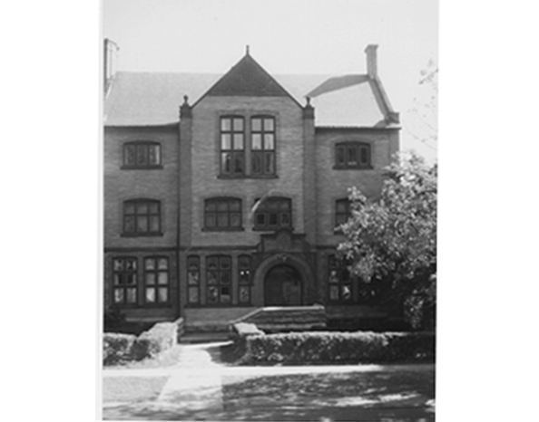

Chapter 10 on the roll
The Xi


- Position on the roll#10
- InstitutionWesleyan University
- Chartered1843
- StatusActive since 1843
- Coat of armsfull-size PDF
Its printed history
Notable brothers of the Xi

In the archive
Pages that name the Xi Chapter or its institution.
Named on 1001 pages across 355 volumes of the archive.
…ult ; also to the desirability of sending in returns at the proper time. " The Xi Chapter, having explained, through its delegate, that its initiation of honorary members occurred in July, '72, prior to the passage of the amendment to Art.…
…ual (!l0UVieuti0W OF THE PSI UPSILON FRATERNITY, HELD WITH THE XI CHAPTER, WESLEYAN UNIVERSITY, MIDDLETOWN, CONN., Wednesday and Thursday, May 9th and IOtu, 1877. CAEMEIi, N. y. : COURIEIl BOOIC AND JOB OFFICE. 1877.
…1877 32 50 July 20, " 1000 Record extracts. . 12 80 Dec. 20, " Balance to Xi Chapter 75 00 May 13, 1878. Delegate to Rochester. 26 00 13, " Upsilon Chapter 175 00 ' ' 28, " Recorder, for 1878 15 00 386 30 Council Fund. $347 97 233 85…
Page24…y everiing ; corre spondence to Mr. C. H. Ray, Box 403, Clinton, N, Y. XI (Wesleyan University 1843).�Chapter House, Broad street, near Court, Middletown; meets Friday evening; correspondence to Mr. E. A. Sumner, Box 1221, Middletown, Conn. ALP…
Page2…es tion seems to be altogether feasible. The XI Chapter was established at Wesleyan University, November 20, 1843, through the instrumentality of Stephen Beekman Bangs of the Delta. He was the son of the Rev. Heman Bangs, a prominent Methodist…
…ay successful. The following notice of the decorations of the rooms of the Xi Chapter House, which are accessible to the pub lic, is taken from a Middletown journal:� " The first thing that attracts attention a.s one enters the new Cha…
Page4…ege 1843).� Correspondence to Mr. L. Olmstead, Box 403, Clinton, N. Y. XI (Wesleyan University 1843).�Correspondence to Mr. C. E. Bacon, Box 1221, Middletown, Conn. ALPHA (.Harvard College 1850).�Chapter at present inactive. CVi'/Z.OA'^ (Univer…
Page8…ge 1843).� Correspondence to Mr. W.L. Kins ley, Box 403, Clinton N. Y. XI (Wesleyan University 1843).� Correspondence to Mr. C^ H. Baker. Box 1221, Middletown, Conn. ALPHA (Harvard College 1850).�Chapter at present inactive. UPSILON (University…
Page4…r these the subject may perhaps be elucidated by citing the example of the Xi Chapter House at Wesleyan. That hand some structure cost ne.arly or quite $15,000, and was all paid for at its occupancy. The list of subscribers com prised…
Page3…he song in question is Mr. George P. Smith {A 1866). ? The prize system at Wesleyan University dates from the year i860. In the years that have intervened between that time and the present, the Psi Upsilon undergraduates of the institution have…
…n Bro. D.Ward Northrop (3 1868), chairman of the Building Committee of the Xi Chapter House, who repeated the invitation to the delegates to visit the Xi, and assured all of a hearty welcome. After thanking the members of the Conventio…
Page10…Kimball, (Beta 1879), of Yale College, and Mr. H. M. Warren, (Xi 1880), of Wesleyan University. The report of that committee is dated June 27th and a copy is herewith submitted. The council, at a meeting held on the 16th inst., considered that…
…sleyan Uni versity, and that previous to said election, the consent of the Xi Chapter was not obtained as requiredby Art. 6. Sec. 5. of the Constitution; therefore. Resolved, &o., That the Executive Council be and hereby is authorized…
Page13…ondence toMr. Elmer C. Sherman, Clinton, Oneida County, New York, . 10. X7(Wesleyan University, 1843).� Correspondenceto Mr. Geo. H. Walker, box 1,231, Middletown, Conn. � n. ALPHA (Harvard College, 1850).� Chapter at present inactive. 13. UPSI…
Page8…Oneida County, N. Y. 10. X/ (Wesleyan University, 1843)� Correspondence to Xi Chapter of Psi Upsilon, box 1231, Middletown, Conn. 11. ALPHA (Harvard College, 1850).� Chapter at present inactive. 12. UPSILON (University of. Rochester, 1…
Page8…e may never know. Wm. E. Robinson (B. 1841). The annual initiation of the" Xi Chapter occurred on the 30th of September. The annual initiation of the Gamma and Chi Chap ters occured on the 21st of October. The annual initiation of the…
…Henry L. Osborn, for the past three years assistant in Natural History in Wesleyan University, is sttidying at John Hopkins University on a fellow ship. '80. W. F. Gordy is Principal of the Ansonia, Connecticut High School. '81. George B. Bene…
Page11…Year. , 3. Mr. Hill had been a member of the Phi Nu Theta Society, and of Wesleyan University, but no correspondence, in accordance with Article VI, Section 5 of the Constitution, had passed between the Beta and the Xi on the subject of his el…
Page16…�l Chapter founded at Hamilton College. 1843 Nov. 20�XI Chapter founded at Wesleyan University. 1843, July 26�Decennial Annlvereary celebrated at Tapping's Hotel, Schenectady, N. Y. 1844, June �Second General Catalogue Issued. II.� CHARACTERIST…
…tation as an orator and a thinker." The ninth Quadrennial exercises of the Xi Chapter wUl occur on Tuesday evening June 27th. At Wes leyan in 1844, the Phi Nu Theta Society estabhshed the custom of holding pubUc exercises, at intervals…
Page8…oble man. REUNION SONG. Written for the Ninth Quadrennial Exercises of the Xi Chapter, June llth, 1882, BY PROF. C. T. WINCHESTER, XI, '69. Air� March by Adam Geibel. What Joys are like the joys o� youth. When hopes are hold and high,…
Page9…every case ; thus mention is made of the number merely of prizes ta ken at Wesleyan University, where A. A. $. has taken but 52^ prizes out of a total of 320 prizes awarded, whereas 146 were taken in the same year by W. T. aud 93i by #, N. 9. I…
…e stay." Mr. Joseph B. Southgate was the voice for Bow doin. 11. "The Xi. (Wesleyan University.) Her home , Is Middletown ; she never sends us middle men." And William B. Silber, Esq., proved it to be a demonstration. 12. "The Alpha. (Cambridge…
Page8…vitation is always out for broth ers of all the chapters to visit us. Xi.� The Xi Chapter held her usual prominent place in the various exercises of commencement week last spring. Our reception, held Tuesday afternoon, was well attended an…
…College, 1843)�Corres pondence to Box 453, Clinton, Oneida Co., N. Y. Xl (Wesleyan University, 1843)� Cor respondence to Xi chapter Box 657, Mid dletown, Conn. Upsilon (University of Rochester, 1858) Correspondence to Upsilon Chapter, Box 502.…
Page13…xt to those already spoken of. It was first sung at the anniversary of the Xi Chapter, Aug. 5th, 185 1, as a tribute to the memory of the Rev. Stephen B. Bangs, Delta, '43, and of the Rev. Joseph J. Lane, Xi, '45, both originators of t…
…en twice as numerous as those of aU the other societies combined ; that at Wesleyan University the society has taken nearly half of aU the prizes awarded, and more than half of all those given during the past decade ; that at Dartmouth we have…
…College, 1843)� Corres pondence to Box 453, Clinton, Oneida Co., N. Y. Xi (Wesleyan University, 1843)� Cor respondence to Xi chapter Box 149, Mid dletown, Conn. Upsilon (University of Rochester, 1858) Correspondence to Upsilon Chapter, Box 502.…
Page13…College, 1843).�Corres pondence to Box 453, Clinton, Oneida Co., N. Y. Xi (Wesleyan University, 1843)�Cor respondence to Xi chapter Box 149, Mid dletown, Conn. Upsilon (University of Rochester, 1858) Correspondence to Upsilon Chapter, Box 502.…
Page13…Chapter. . . 68 II Poster of Phi Theta Psi 70 12 Beta Chapter-Hall 128 13 Xi Chapter-House 131 14 Gamma Chapter-House 135 15 Phi Chapter-House . . . . . . . 139 16 Psi Chapter- House 143 17 Beta Beta Chapter-Lodge 148 18 Eta Chapter-H…
…arvard, Brown, Columbia, New York University, Lehigh, Michigan University, Wesleyan University, Amherst, Bowdoin, Dartmouth, Hamil ton, Cornell, University of Chicago, Kenyon, Syracuse Univer sity, Union College, and the University of Rochester…
…ance with Gen. Res. No. 12, of 1888, in July last the CouncU nominated the Xi Chapter to appoint the Chairman of a Song Book Committee. - No report has been received from the Committee. The Council has one copy of the last edition of t…
…A PLEDGE TO PSI UPSILON. [Page 20.] Written for the 9th Quadrennial of the Xi Chapter, June 27, 1882. INITIATION NIGHT. [Page 25.] Written for the annual initiation of the- Sigma, Oct. 16, 1887. GLORY BE UNTO THEE. [Page 28.]' It is sa…
…lty is large, and this contributes not a little to their success. " Of our Xi Chapter at Wesleyan University, The Delta, Kappa Epsilon Quarterly for January, 1883, had this to say: "The Psi Upsilon and the local society have built chap…
…rly used as a billiard room is now ^ being converted into a library. Xl. � Wesleyan University. Friday evening, October 11, 1895, the following members of the class of '99 were initiated : Joseph Beech, Eliza beth, N. J. ; Archibald Elbridge Br…
Page30…the latter, though a member of the local society which was the germ of our Xi Chapter, had been graduated before the Psi U. branch at Wesleyan was organized. CHAPTER NEWS. Delta. � New York University. The second old est Chapter of the…
…'96, Watertown, N. Y. John Howard Holmes, '96, St. Louis, Mo. XI CHAPTER� WESLEYAN UNIVERSITY. tHenry Smith Carhart, '68, Ann Arbor, Mich. Charles Wesley Smiley, '74, Washington, D. C. Frederick Wright Robbins, '80, Detroit, Mich. Frederick Sa…
Page31…versity, at Middletown, Conn., was called to order, at 10.30 A. M., in the Xi Chapter Hall, by Bro. Herbert L. Bridgman {F '66), of the Executive Council, who named Bro. L. K. Willman (3 '97) Temporary President, and Bro. R. D. Whiting…
…ed to grant the request. I remain. Yours sincerely, (Sgd.) Cranswick Jost, Xi Chapter. Truro, N. S., April 3rd, 1901. The Grange, Toronto, April 18th, 1901. G. Whitman Bailey, Esq., Montreal. Dear Sir: � I believe I have already said�…
Page39…he Kappa, the Psi, and the Xi, from Bowdoin College, Hamilton College, and Wesleyan University. Thus within a decade after its foundation, and at a time when very few of the many Greek -letter organ izations now crowding our colleges were in ex…
Page7…Brunswick, Maine. PSI � Hamilton College College St., Clinton, N. Y. XI � Wesleyan University. . .High & College Sts., Middletown, Conn. ALPHA � Inactive UPSILON � University of Rochester 41 Prince St., Rochester, N. Y. IOTA � Kenyon College G…
…P. M. The Convention was called to order at 2:45 P. M. at the home of the Xi Chapter, High and College Streets, Middletown, Conn., by . Brother Herbert L. Bridgiran, a delegate from and President of the Executive Council. Brother Brid…
…, Brunswick, Maine PSI � Hamilton College College St., Clinton, N. Y. XI � Wesleyan University. . .High & College Sts., Middletown, Conn. ALPHA � Inactive UPSILON � University of Rochester . . 41 Prince St., Rochester, N. Y. IOTA � Kenyon Colle…
…Brunsvsdck, Maine PSI � Hamilton College College St., Clinton, N. Y. XI � Wesleyan University. . .High & College Sts., Middletown, Conn. ALPHA � Inactive UPSILON � University of Rochester . . 41 Prince St., Rochester, N. Y. IOTA � Kenyon Colle…
…, Brunswick, Maine PSI � Hamilton College College St., Clinton, N. Y. XI � Wesleyan University. . .High & College Sts., Middletown, Conn. ALPHA � Inactive UPSILON � University of Rochester . . 41 Prince St., Rochester, N. Y. IOTA � Kenyon Colle…
…., Brunswick, Maine PSI� Hamilton College College St., Clinton, N. Y. XI� ^Wesleyan University High & College Sts., Middletown, Conn. ALPHA� Inactive UPSILON� ^University of Rochester 41 Prince St., Rochester, N. Y. IOTA� ^Kenyon College Gambie…
…St., Brunswick, Maine PSI�Hamilton College College St., Clinton, N. Y. XI� Wesleyan University. .High and College Sts., Middletown, Conn. ALPHA� Inactive UPSILON� University of Rochester. .41 Prince St., Rochester, N. Y. IOTA� Kenton College Ga…
…St., Brunswick, Maine PSI�Hamilton College CoUege St., Clinton, N. Y. XI� Wesleyan University. .High and College Sts., Middletown, Conn. ALPHA� Inactive UPSILON� University of Rochester. .41 Prince St., Rochester, N. Y. IOTA� Kenyon College Ga…
…., Brunswick, Maine. PSI� Hamilton College College St., Clinton, N. Y. XI� Wesleyan University. .High and College Sts., Middletown, Conn. ALPHA� Inactive UPSILON� University of Rochester. .41 Prince St., Rochester, N. Y. IOTA� Kenyon College Ga…
…St., Brunswick, Maine. PSI�Hamilton College CoUege St., Clinton, N. Y. XI�Wesleyan University. .High and CoUege Sts., Middletown, Conn. ALPHA� Inactive UPSILON�University of Rochester. .41 Prince St., Rochester, N. Y. IOTA�Kenyon College Gambi…
…., Brunswick, Maine. PSI� Hamilton College College St., Clinton, N. Y. XI� Wesleyan University. .High and College Sts., Middletown, Conn. ALPHA� Inactive UPSILON� University of Rochester. .41 Prince St., Rochester, N. Y. IOTA� ILenyon College G…
…St., Brunswick, Maine. PSI�Hamilton College CoUege St., Clinton, N. Y. XI�Wesleyan University. .High and College Sts., Middletown, Conn. ALPHA� Inactive UPSILON�University of Rochester. .41 Prince St., Rochester, N. Y. IOTA�Kenyon College Gamb…
…t., Brunswick, Maine. PSI�Hamilton College College St., Clinton, N. Y. XI� Wesleyan University. .High and College Sts., Middletown, Conn. ALPHA� Inactive UPSILON� University of Rochester. .41 Prince St., Rochester, N. Y. IOTA� Kenyon College Ga…
…t., Brunswick, Maine. PSI�Hamilton College College St., Clinton, N. Y. XI� Wesleyan University. .High and College Sts., Middletown, Conn. ALPHA� Inactive UPSILON� University of Rochester. .41 Prince St., Rochester, N. Y. IOTA� Kenyon College Ga…
…t., Brunswick, Maine. PSI�Hamilton College College St., Clinton, N. Y. XI� Wesleyan University. .High and College Sts., Middletown, Conn. ALPHA� Inactive UPSILON� University of Rochester. .41 Prince St., Rochester, N. Y. IOTA� Kenyon College Ga…
…t., Brunswick, Maine. PSI�Hamilton College College St., Clinton, N. Y. XI� Wesleyan University. .High and CoUege Sts., Middletown, Conn. ALPHA� (Harvard University) Inactive UPSILON� University of Rochester. .41 Prince St., Rochester, N. Y. IOT…
…t., Brunswick, Maine. PSI� Hamilton College College St., Clraton, N. Y. XI�Wesleyan University. .High and College Sts., Middletown, Conn. ALPHA� (Harvard University) Inactive UPSILON� University of Rochester. .41 Prince St., Rochester, N. Y. IO…
…1873. Brother Cole was the Dean of Psi Upsilon Alumni� and he returned to Wesleyan University for the 75th anniversary of his graduation in 1922. Afterward Senator Cole appeared once again in Washington and took his old place in the senate, th…
…, Brunswick, Maine. PSI� Hamilton Coixege College St., Clinton, N. Y. XI� ^Wesleyan University High and College Sts., Middletown, Conn. ALPHA� (Harvard University) Inactive UPSILON� ^University of Rochester 41 Prince St., Rochester, N. Y. IOTA�…
…, Brunswick, Maine. PSI� Hamilton College College St., Clinton, N. Y. XI� ^Wesleyan University High and College Sts., Middletown, Conn. ALPHA� (ELlrvard University) Inactive UPSILON� University op Rochester 41 Prince St., Rochester, N. Y. IOTA�…
…St., Brunswick, Maine PSI�Hamilton College College St., Clinton, N. Y., XI�Wesleyan University High and College Sts., Middletown, Conn. ALPHA� (Harvard University), Inactive UPSILON�University of Rochester 41 Prince St., Rochester, N. Y. IOTA�…
…St., Brunswick, Maine PSI� Hamilton College College St., Clinton, N. Y. XI�Wesleyan University High and College Sts., Middletown, Conn. ALPHA� (Harvard University) Inactive UPSILON� University of Rochester 41 Prince St., Rochester, N. Y. IOTA�…
…om in Quincy, Mass., on November 11, 1843, and received an A. B. degree at Wesleyan University in 1866 and in 1869 received his A. M. degree from the same University. He was President of Northwestern Female College from 1868 to 1871, and as sis…
…able, Hodgman, and GaUatin left col lege for various reasons. Brother XI� Wesleyan University
Page57…usical Clubs. He may get it, too. Carleton H. Davis, Associate Editor. XI� Wesleyan University nPHE brethren in the Xi entered so "*� wholeheartedly into the spirit of the recent spring dances that aU efforts to regenerate academic zest and pep…
Page55…St., Brunswick, Maine PSI� Hamilton College College St., Clinton, N. Y. XI�Wesleyan University High and College Sts., Middletown, Conn. ALPHA� (Harvard University) Inactive UPSILON� Universitt of Rochester 41 Prince St., Rochester, N. Y. IOTA�…
Page5…are Knowles, M. Webster, Ward, McCabe, J. Webster, Jack, and Jennings. XI� WESLEYAN UNIVERSITY
Page51…., Brunswick, Maine PSI� iHamilton College College St., Clinton, N. Y. XI� Wesleyan University High and College Sts., Middletown, Conn. ALPHA� (Harvard Univeesity) Inactive UPSILON� Univeesity of Rochester 41 Prince St., Rochester, N. Y. IOTA�…
…w York University Sigma� Brown University Lambda� Columbia University Xi� -Wesleyan University Iota� Kenyon College Epsilon� ^University of California Delta Delta� Williams College Theta Theta� University of Washington BETA� Yale University 'T'…
Page46…ent in their midst! Consequently (though not because of that student), the Xi Chapter takes great pleasure in announcing the pledg ing of the following men: Sumner Shailer Barton Brightwaters, N. Y. Robert Cornelius Bodine Phifadelphia…
Page58…ship, gives us a rather firm grip on the managerial department of that XI� Wesleyan University
Page52…the admission of the Kappa, the Psi, and the Xi, at Bowdoin, Hamilton and Wesleyan University. Thus within a decade after its foundation and before many of the Greek letter organizations of today were in existence, Psi Upsilon had become a vnd…
…r them around the 13th of June, just previous to Commencement week end. XI Wesleyan University
…, Yonkers, N. Y. George Russel Torge 42 Donaldson Road, Buffalo, N. Y. XI� Wesleyan University Glass of 1932 James R. Addington Lake Forest, III John J. Adriance New York City Guerdon H. Bacon Palm Beach, Fla. George G. Bent Hartford, Conn. Ken…
…house on the hUl and is always in the best of condition. This is due enXI� Wesleyan University
Page54…s at last been definitely announced. Z. L. Macmillan, Associate Editor XI� Wesleyan University THE mid-year exams had no sooner passed on, leaving in their wake scores of unfortunates who were not ready to withstand the onslaught, than an other…
…m the "Expired Chapter of Psi Upsilon." (Laughter) Here are telegrams from Middletown Xi Chapter; Sigma, Providence;
…each house an opporPSI� Hamilton College (No conununication received.) XI� Wesleyan University
Page78…as conferred upon him by Marietta College, and Doctor of Humane Letters by Wesleyan University, from which he was graduated in 1880. Mr. Gordy was born in Salisbury, Md., June 14, 1854. From 1881 to
…ty, LL.D. 1905 Miami University, LL.D. 1905 University of Iowa, LL.D. 1907 Wesleyan University, LL.D. 1909 Princeton University, LL.D. 1912 honors at YALE Psi Upsilon Skull and Bones Runk Scholar, 1875-76 First Mathematical prize, 1875 Two 1st…
…bk, Associate Editor PSI� Hamilton College (No communication received) XI� Wesleyan University THE march of events has given ample justification for the optimism shown in the last communication from the Xi. Brothers Root, Perry, Skirm, Guernsey…
…last convention. The reply received from President James L, McConaughy of Wesleyan University, Middletown, Conn., was so interesting and instructive that we have asked his permission to reprint it in this issue of the Diamond. We are sure that…
…er. . . . The delegates arose and were applauded . . . Toastmaster Moses : The Xi Chapter. . . . The delegates arose and were applauded . . . Toastmaster Moses: The Upsilon Chapter. . . . The delegates arose and were applauded . . . Toastm…
…rn, Associate Editor PSI� Hamilton College (No communication received) XI� Wesleyan University "'Tis not time that passes, 'Tis we that pass." THUS has Brother Dan Robertson passed from the ancient order of Psi Upsilon into the "antique order o…
…last convention. The reply received from President James L, McConaughy of Wesleyan University, Middletown, Conn., was so interesting and instructive that we have asked his permission to reprint it in this issue of the Diamond. We are sure that…
…Clinton, New York Frank Eddy Standish Grosse Pointe, Detroit, Michigan XI� Wesleyan University Class of 1935 Robert Decker Beech Dixon 111 Herbert Scott Blake, Jr Glen Ridge, N. J.
…re about forty in attendance. Brother McCormack of the Xi and a Trustee of Wesleyan University was the principal speaker; he gave a very interesting taUt on loyalty to the Fraternity. Preceding the Luncheon the
…es, but what did you do while you were wearing me?" *An address before the Xi Chapter, by Burdette R. Buckingham, Xi '99 delivered before the Chapter's Commencement Banquet in June '31 and repeated, by request, at the Wesleyan Centenni…
…Branch, N. Y. David White Medina, N. Y. William Wooden Flushing, N. Y. XI� Wesleyan University Class of 1936 John Eastman Andresen New York City John Semple Barton Brightwaters, L. I. Bradford Morrill Bentley Winchester, Mass. Earle Wiley Clark…
…nd Serpent, the International Rela tions Club, and the Progressive Club of Wesleyan University. Sent to Wesleyan originally as an Alumni Scholar from Philadelphia, Bodine has maintained the highest scholastic standing of any under-graduate sinc…
…ors. Sing Psi Upsilon. Professor Harrington was then Professor of Latin at Wesleyan University, becoming emeritus in 1885 and dying in 1886. The Poet of the occasion was Professor Hjalmar Hjorth Boyesen, Chi '68, who had recently become Profess…
…y, a director of the Mount Sinai Memorial Park, treasurer and a trustee of Wesleyan University, a trustee of Packer Collegiate Institute, a member of the standing committee and a trustee of the estates belonging to the Diocese of Long Island. M…
…cond year at Varsity end and Brothers Bently, Jennings and Slocum show XI� Wesleyan University
…rded to: first prize $75.00 to the Tau Chapter; second prize $50.00 to the Xi Chapter and third prize of $25.00 to the Psi Chapter. It would fiU the issue to relate all the skits, but there was a vast amotmt of originality and fun abou…
…is no official ranking at midyears. In the realm of campus activity we XI� Wesleyan University
…Lowe Salter, 3rd Glen Ridge, N. J. Wells Seymour Wetherell Omaha, Neb. XI� Wesleyan University Class of 1938 Alling Prudden Beardsley, Jr Plainfield, N. J. Ernest Kingston Bragdon New Rochelle, N. Y. David Irving Dary New Britain, Conn. Henry S…
90 THE DIAMOND OF PSI UPSILON XI� Wesleyan University THE Xi settled down to a happy New Year with everybody back except those who succumbed to a merry Xmas, grippe colds, etc. The win ter schedule procl…
Page32…ergraduate Brothers, all from the class of 1935, and four of them from the Xi Chapter have been honored by election to Phi Beta Kappa so far this year. The Alumni Association of Psi Upsilon has been notified, and keys have been purchas…
…year was founded at Wesleyan the Kappa Delta Phi Society, the germ of the Xi Chapter itself. That brings the Xi Chapter itself back to the year 1840. The establishment of the Sigma Chapter at Brown followed, which again was largely th…
…Who Have Paid Psi U Alumni Association Dues 28 Book Review (History of the Xi Chapter) 33 Psi Upsilon Heraldry 35 Delta and Lambda Chapters Get Together 47 Pledges Announced by the Chapters 48 In Memoriam 55 Directory Chapter Roll 55 O…
The Home oe the Xi Chapter
…arsity swimming Brothers Joslin and Grant are defending their positions XI Wesleyan University
Page49…only one other book has been reviewed in this publication {History of the Xi Chapter by Karl P. Harrington, Xi '82). Now a short volume entitled The Soul of George Washington, written "Because I feel that it is my duty," by Brother Jo…
Page26…nd Tomlinson Watervliet, N.Y. Edward Judson Wynkoop, Jr Syracuse, N.Y. XI� Wesleyan University Class of 1940 Oliver H. Bartine, Jk Bridgeport, ConnHoLROYD B. CuRTs Middletown, ConnWilliam R. Evans, Jr Indianapolis, IndCharles Coulston Gillispie…
…"Winterset," and is one of the founders of the newly-formed Ski Club. XI� Wesleyan University With the arrival of the new year the Xi stops to take note of its accomplishments during the past semester and its possibilities for the coming year.…
…lliam Howe, Presi dent of the Upsilon, L. I. Snyder of the Delta, The Rho, Xi Chapter, Ed Huyler of Psi U from Honolulu, George C Kastner for Phi Gamma Delta, Frank J. Gould from Paris, France. Judge Garvin, Chairman of the Centennial…
…Diamond: Sports: Basketball: Varsity, Dary (manager). Freshman, Snyder. XI Wesleyan University
…College Body Presidents,' " according to a survey recently printed in the Wesleyan University Alumnus. Since the College Body, the executive body in charge of undergraduate affairs, was organ ized at Wesleyan in 1904-, Psi Upsilon has had 12 o…
…s, N. Y., by an automobile. Born in Pattens Mills May 5, 1855, he attended Wesleyan University from 1879 to 1881. He established the Bullard Press after a long and distinguished ca reer in the printing business which he began as an apprentice i…
…in 1890, he served churches in New York and Connecticut. President of Ohio Wesleyan University from 1905 to 1916, in the latter year he became a bishop and was assigned to the residence in Seuol, Korea. In 1928 he returned to America and served…
…41, were inducted into the Fraternity. John M. Stacey, Associate Editor XI Wesleyan University Frederick Hequembourg, Theta '39, has been made Editor-inChief of The Concordiensis, the Union College newspaper.
…election of Harold G. Travis, '20, both members of the Alumni Council. The Wesleyan University Alumnus ioi October, 1938, contains the following account of Brother Travis: "Mr. Travis, elected by the Alumni, joined the Ludlow Manufacturing Asso…
…ar he was a member of the House of Representatives. In 1922 he returned to Wesleyan University for the seventy-fifth anniversary of his graduation. A recent issue of The Saturday Evening Post carried the following story about Brother Cole. "The…
…that they honestly cannot pay their Fraternity bills. My knowledge of the Xi Chapter, based on four years' experience as a Depression undergraduate and less than two years as an alumnus leads me to think that on an average there are f…
…Charies B. Ten nant, Syracuse, N. Y.; James R. Watt, III, Albany, N. Y. XI Wesleyan University Class of 1942: Abner Woodruff Sibal, Norwalk, Conn. Cla.ss of 1943: Robert CoUington Ackart, Wilmington, Del.; John Alex ander Benson, Windsor, Conn.…
…also engaged in debating activities. George S. Tillman Associate Editor XI Wesleyan University The Xi continued its fast pace into the late fall as Brothers Bill Leckie and Sid Pond grabbed the two highest athletic honors of the season: Leckie,…
…has entered an aeronautical school. George S. Tillman Associate Editor XI Wesleyan University At the time of this writing the chapter is deep in preparations for its annual faculty party, a major event on our so cial program. This year, under…
…found in the chapter a fine group of fellows whose all-around standing in Wesleyan University was very high. I had the good fortune to run into Lew Gordon, Xi '94, whom I had met before and knew quite well. He, a wonderful football player and…
…wick, Me. PSI� ^� Hamilton College� 1843 College St., Clinton. N.Y. XI� S� Wesleyan University� 1843 High and College Sts., Middletown, Conn. UPSILON�T� University of Rochester� 1858 Rochester, N.Y. IOTA� I� Kenton College� 1860 Gambier, Ohio P…
Page63…si Hamilton College College Street September 25, 1843 Clinton, New York Xi Wesleyan University High and College Streets November 20, 1843 Middletown, Connecticut Upsilon University of Rochester College Campus February 15, 1858 Rochester, New Yo…
Page18…19, 20, voted that the "Resusci tation of the Theta be entrusted with the Xi Chapter." According to the minutes of the Convention of 1866, "The Xi was too far removed from Union to take action in the matter and so delegated their pow…
…m bers kkled in the "War." "Resuscita tion of the Theta entrusted with the Xi Chapter; and the resuscitation of the Alpha, with the Sigma Chapter." Public literary exercises in the Stone Church, Chauncey M. Depew, Beta '56, presiding;…
…after long delay by various commit tees had been given new impetus by the Xi Chapter at the 1888 and 1889 Conventions, also received the Coun cil's careful attention; and, in De cember, 1891, the Tenth Edition of the "Songs of the Psi…
Page11…ly as 1839 and 1840. A few years later, at the Convention of 1848 with the Xi Chapter at Middleton, Connecticut, Brother Joseph R. Hawley, Psi, 1847, later to achieve national eminence, wrote as a Sec retary of the Convention in con cl…
Page1…SIXTH EDITION, 1870. Contains 52 songs. This edition was entrusted to the Xi Chapter. It was the first Song Book to contain words with music. Pubhshing Committee: Caleb T, Winchester '69, Frank E. Porter '69, Darius Baker '70, Leon C.…
…n Yale College .... August, 1S39, The Kappa Delta Phi Society (germ of the Xi Chapter) formed in Wesleyan University March 11, 1840. The Sigma Chapter established in Brown University , . March 28, 1840. Convention held with the Beta (Y…
…he hope that the Convention of 1942 will assign the 1943 Convention to the Xi Chapter at Wesleyan University, which Chapter at that time also celebrates its Centennial Anniversary. Upon motion duly made, seconded and passed, it was vot…
Page12…. Dains, '90, University of Kansas; Professor Lewis G. Westgate, '90, Ohio Wesleyan University
…nswick, Me. PSI��4'�Hamilton College�1843 College St., Clinton, N.Y. XI� S�Wesleyan University� 1843 High and College Sts., Middletown, Conn. UPSILON�T�University op Rochester�1858 Rochester, N.Y. IOTA�I�Kenyon College�1860 Gambier, Ohio PHI�*�…
Page63…nswick, Me. PSI�'J'�Hamilton College�1843 College St., Clinton, N.Y. XI� 2�Wesleyan University� 184.3 High and College Sts., Middletown, Conn. UPSILON�T�University of Rochester�1858 Rochester, N.Y. IOTA�I�Kenyon College-1860 Gambier, Ohio PHI�*…
Page64…to be active in winter sports. Owen C. Thomas Associate Editor XI CHAPTER Wesleyan University House President John Crane Hoover Xi '42 With a generous supply of verve, and an ampler share of brains, John Hoover has been a mainstay in the prese…
…ssue was in course of preparation. The President further reported that the Xi Chapter, founded in 1843, would not compete with the Psi, whose charter dates from earlier in that year, or with any other chapter, in securing the allo cati…
…1887, Bro ther Hine attended New Haven High School and was graduated from Wesleyan University in 1912 with a B.S. degree. In 1920 he re ceived his M.S. degree from Trinity College. For a few years before the World War I, "Monk" taught at Thomp…
…si U's which stands before you represents the undergraduate members of the Xi Chapter, its Alumni Association, the Faculty and the Trustees of Wesleyan University. With us also is the Editor of The Wesleyan Alumnus, himself a member of…
…ide's Name Place Date Kappa Chapter Caroflyn Anderson Denver, Colo. Apr. 2 Xi Chapter Elisabeth C. Stone Coatesville, Pa. Dec. 30 Omega Chapter Elinor B. Louis Aug. 8 Phi Chapter Nancy P. Surgenor Rochester, N. Y. Mar. 21 Clara Rhodes…
LL OF CHAPTERS OF PSI UPSILON vii CHAPTER UNIVERSITY AND DATE; ADDRESS Xi Wesleyan University High and College Streets November 20, 1843 Middletown, Connecticut Upsilon University of Rochester College Campus February 15, 1858 Rochester, New Yo…
Page5…VANS, III, Xi "40 By Pvt. Charles C. Gillespie, Xi '40 (Reprinted from The Wesleyan University Alumnus, October, 1942) For all who knew him well the friendship of Bill Evans, or Monty as he was often called, will always remain one of the finest…
…l Association, Nu Chapter Alumni Association, Philadelphia Association and Xi Chapter Trustees. Telegrams were read from: Brothers E. T. Richards, member of the Execu tive Council; from R. B. Corcoran at Cleveland; and a message from H…
Page5…ive membership in the Chapter. Robert E. Jacobson, Jr. Associate Editor XI Wesleyan University With but some seventy-five freshmen enter ing Wesleyan this year, there was strong doubt in the minds of many of the houses on campus as to whether o…
…hese are the meetings that make life worth while. G. S. F. Lincoln, '91 XI Wesleyan University The XI continues strong. Fifteen retuming brothers began the term in November, but shortly thereafter Brothers Page and Ott were called to the servic…
…nstaUed in the aircraft carrier Enterprise. Brother Holton is a tiustee of Wesleyan University. James vanB. Dresser, Xi '137, has been appointed by the General Motors Corporation to an assistant production manager post in the vital Far East are…
…sented by the College Dramatic Society. Holden Findlay Associate Editor XI Wesleyan University The Xi is still , functioning as nearly nor mally as wartime conditions will permit. We now number eight brothers and we have four pledges, three fre…
…John C. Lunde, and Paul A. Boyle. Robert H. Bush, '47 Associate Editor XI Wesleyan University The Xi now has seven active undergradu ate brothers and four pledges. The house is StiU open with two civihans living in it. In comparison vsdth the…
…we have been able to keep a small nucleus for the brighter days ahead. XI Wesleyan University The Xi is still functioning and strong as another semester begins. The past term saw the addition of nine men to our ranks, four during the regular r…
…North Water Street, Rochester, N.Y., who is in charge of soficitation. XI Wesleyan University Under the very capable leadership of Brother Halsted and the close cooperation of the relatively few Brothers in the Chapter this summer, the Xi gath…
…heir under graduate brothers in the bonds. Oliver B. Merrill, Jr. Clerk XI Wesleyan University Another spring semester opened here at Wesleyan on March first, and it looks hke a bright one for theXi. The House is under the leadership of Zeke Mc…
…PSILON SCENE Xi Finances Reported to Alumni A CRITICAL situation faces the Xi Chapter '*and, accordingly, a detaUed study of the financial position has been made by a committee composed of Tad Jones, '11, Bo Cawley, '14, Pete Curts, Be…
…A PLEDGE TO PSI UPSILON. [Page 20.] Written for the 9th Quadrennial of the Xi Chapter, June 27, 1882, INITIATION NIGHT. [Page 25.] Written for the annual initiation of the Sigma, Oct. 16, 1887.j GLOET BE UN:rO THEE. [Page 28.] It is sa…
THE CHAPTERS SPEAK XI Wesleyan University With the close of the Summer semester, the Navy V-12 Unit at Wesleyan was disbanded; as a result the Xi lost six brothers: Frank Hop kins, '48, Henry…
…SI UPSILON SCENE Xi Centennial THE delayed Centennial of the Xi chapter at Wesleyan University, Middletovm, Conn., is to be held October 25, 26 and 27. This historic celebration would have been held on November 20, 1943, ff conditions had per m…
…l make our noble old Fraternity more truly an unit." To this song book the Xi Chapter itself contributed 42 songs by 18 different writers, notably Brothers C. S. Harrington, '52, K. P. Harrington, '82, C. R. Smith, '99, and C. F. Price…
…j. Weed, Theta '01, New PnEsroENT 5 New Members of the Executive Council 6 Xi Chapter Celebrates Centennial 9 Report of Our Special Committee on Improving Relations of Chap ters wnTH Educational Institutions (Third and Last Installment…
…clusive of the Lambda, which were next in line for holding the Convention. The Xi Chapter replied that it could not undertake the Convention in view of its recent Centennial celebration. The Theta Theta Chapter had written expressing its w…
…to an even more successful spring. Ralph M. Shulansky Associate Editor XI Wesleyan University The Xi has increased its number by the addition of one pledge, Clyde O. Fisher, '49, since its last communication, and has in the interim held electi…
…ly 9, 1947. He was 65 years of age. Brothers Bodine was named a trustee of Wesleyan University in 1928. A Scoutmaster, he became known as a lecturer through his taUcs on astronomy to Boy Scouts. He was the author of a coUection of nature poems,…
…and the J. V. basketbaU teams. Albert J. Wrigley, III Associate Editor X! Wesleyan University The Xi stepped into the fall term with a fuU sbide this year, with all of the Brothers retuming nearly a week before registration
…a University 1843 Kappa�Bowdoin College 1843 Psi�Hamilton CoUege 1843 Xi� ^Wesleyan University 1858 Upsilon�University of Rochester 1860 Iota� Kenyon College 1865 Phi� ^University of Michigan 1869 Omega� University of Chicago 1875 Pi� Syracuse…
Page4…, was called upon by President Weed, and said a few words in praise of the Xi Chapter and its standing on the Wesleyan campus. Upsilon� (William S. Simpson, Jr., '49). The Chapter has just graduated a senior delegation of six men. Four…
Page16…843 .College St., Clinton N.Y. Edward W. Stanley, '27, Clinton, N. Y. XI�S�Wesleyan University�1843 High and College Sts., Middletown, Conn. Harold G. Travis, '20, 211 Congress St., Boston, Mass. UPSILON-T-University of Rochester-1858 Rochester…
Page35…as a member of the Junior class. Albert J. Wright, III Associate Editor XI Wesleyan University The Xi entered the second term of the col lege year with new officers at the helm. President Carlyle F. ("Hop") Bames; VicePresident Bruce C. ("Tiger…
…sey, '31, son of Ben jamin W. Guernsey, '04, was elected presi dent of the Wesleyan University Alumni Association of Greater Boston at the annual meeting, at which Harold G. Travis, '20, acted as toastmaster. Stanley L. Thornton, '20, has been…
…, was called upon by President Weed, and said a few words in praise of the Xi Chapter and its standing on the Wesleyan campus. UPSILON University of Rochester (Wilham S. Simpson, Jr., '49). The Chapter has just graduated a senior deleg…
…to give the boy finan cial assistance throughout his period of education. The Xi Chapter, as always, extends a most friendly invitation to all Psi U's who come to the Wesleyan campus. Zeta Zeta� (Previously passed) � (Walter M. Ewing, '51…
Page25…ng my Chapter with an Edifice of its own?" ... To cite the ex ample of the Xi Chapter House at Wes leyan. That handsome structure cost nearly, or quite $15,000, and was all paid for on occupancy. The list of subscribers com prised 174…
…843 College St., Clinton, N.Y. Edward W. Stanley, '27, Clinton, N. Y. XI�S�Wesleyan University� 1843 High and College Sts., Middletown, Conn Frank B. Cawley, '14, Avon Old Farms School, Avon, Gonn. UPSILON�T�University of Rochester�1858 Rochest…
Page30…rector of the New York Stock Exchange, and was for many years a trustee of Wesleyan University. He is survived by his widow, three sons and a daughter. William Edward Mead, Xi '81 Dr. WiUiam Edward Mead, Xi '81, died July 17, 1949, in Middlesex…
…Y., and Robert Kelso of Walden, N.Y. Robert J. Tillman Associate Editor XI Wesleyan University On September 16 the forty-five active mem bers of the Xi returned to take part in rush ing. Thanks to the work done by the Cultiva tions Chairman, Jo…
…3 College St., Clinton, N.Y. Edward W. Stanley, '27, Clinton, N. Y. XI� S� Wesleyan University� 1843 High and College Sts., Middletown, Conn. Frank B. Cawley, '14, Avon Old Farms School, Avon, Conn. UPSILON-T-University of Rochester-1858 Roches…
Page36…843 College St., Clinton, N.Y. Edward W. Stanley, '27, Clinton, N. Y. XI�A�Wesleyan University�1843 High and College Sts., Middletown, Conn. Frank B. Cawley, '14, Avon Old Farms School, Avon, Conn. UPSILON-T-University of Rochester-1858 Rochest…
Page40…843 College St., Clinton, N.Y. Edward W. Stanley, '27, Clinton, N. Y. XI-3-Wesleyan University- 1843 High and CoUege Sts., Middletown, Conn. George F. Bickford, '19, 7 Oak St., Grafton, Mass. UPSILON -T- University of Rochester-1858 Rochester,…
Page36…e fruits of its loyal and devoted alumni. Throughout its almost 120 years, Wesleyan University at Middletown, Con necticut has been especially fortunate in the high cahbre of the Brothers in the Xi Chapter of Psi Upsilon, founded in 1843. For m…
…Conference, both of which were held at Hamilton. Xi� (Richard Barth, '52). The Xi Chapter of Psi Upsilon got off on its best foot in the fall of 1950 by the culmination of a successful rushing campaign. Fifteen topflight freshmen and one a…
…ent of the Central Hanover Bank and Trust Company. He was President of the Xi Chapter in his senior year. He played baseball for four years and footbaU for three years, received Honorable Mention as all-American quarterback, and was ca…
…843 College St., Clinton, N.Y. Edward W. Stanley, '27, Clinton, N. Y. XI�S�Wesleyan University� 1843 High and College Sts., Middletown, Conn. George F. Bickford, '19, 7 Oak St., Grafton, Mass. UPSILON-T-University ok Kochesteh-1858 Rochester, N…
Page35…ch were held at Hamil ton. XI Wesleyan University XI (Richard Barth, '52). The Xi Chapter of Psi Upsilon got off on its best foot in the fall of 1950 by the culmination of a successful rushing campaign. Fifteen topflight freshmen and one a…
…e vicinity of Clinton to pay us a call. William Galvin Associate Editor XI Wesleyan University The fall quarter recently concluded was a successful one for the Chapter. Of primary importance was the pledging of thirteen top men on campus. Alrea…
…his Convention express its appreciation for the cor dial invitation ef the Xi Chapter to be host to the Convention in 1953, and that the invitation be accepted. Resolved: That this Convention thank the Epsilon Nu Chapter for its kind i…
…843 College St., Clinton, N.Y. Edward W. Stanley, '27, Clinton, N. Y. XI�S�Wesleyan University�1843 High and College Sts., Middletown, Conn. George F. Bickford, '19, 7 Oak St., Grafton, Mass. UPSILON-T-Univehsity of Rochester-1858 Rochester, N.…
Page36…e. This rule prevented four pledges from Thomas K. Harms, President of the Xi Chapter wearing the pin until spring, but fortunately 13 pledges were ready to be given the right hand of a Brother. They were: Arthur C. T. Gorman, Stewart…
Page24…as a unified fraternal whole. Allen Hetherington, Jr. Associate Editor XI Wesleyan University With the advent of spring, Xi-men's thoughts have turned toward outdoor activi ties. Representing' the house on the varsity Track Squad are John Reme…
…n 1954. A motion was made and accepted that the 1953 Convention be held at Xi Chapter, Wesleyan University.
RECORDS MINUTES OF THE MORNING SESSION THURSDAY, SEPTEMBER 10, 1953 Xi Chapter House Wesleyan University Middletown, Connecticut The annual Convention, held in the 120th year of the Psi Upsilon Fraternity and with the Xi Chapter…
On the occasion of the 1877 Convention, ground was broken for the above Xi Chapter House. This year the Xi will cele brate its llOth anniversary and will entertain the I Nth Con vention in the 120th year of the Fraternity. The Diamo…
…h World Service. In 1947, the Bishop preached the bac calaureate sermon at Wesleyan University, his alma mater. Alumni of 60 years' stand ing are, of course, not unprecedented, but have you heard of a university head with complete confidence, t…
…. PEATTIE, Phi '06 Associate Editor PETER A. GaBAUER, Pi '25 Convention at Xi Chapter Next September 109 Convention Program 110 Wesleyan University Ill To Persevere and to Excel 113 Trinity College Inauguration of Albert C. Jacobs, Phi…
…aduate delegates to the 1953 Annual Convention, held in September with the Xi Chapter in Middletown, Connecticut. IN THIS ISSUE Page Page Robert A. Iaii, Beia '10 1 Book of Woodcarving (Review) 34 The 111th Convention of Psi Upsilon 3…
…y, but that no credentials had as yet been submitted by delegates from the Xi Chapter and the Eta Chapter. Brother George H. Quinby, Kappa '23, requested and obtained permission to address the Convention on the subject of Convention ph…
…ather repre sented an unbroken span of 105 years active association in the Xi Chapter of Psi Upsilon. Calvin Sears Harrington was in itiated into the chapter in 1848, graduated with the class of 1852, and after almost a decade with the…
…se possible and extend our welcome to those who would like to visit us. XI Wesleyan University With the advent of the Spring social and athletic seasons, many Xi Brothers have dis tinguished themselves on campus. Brothers Chittenden and Bixby h…
14 THE DIAMOND OF PSI UPSILON XI Wesleyan University The Brothers returned early in September to get the House ready for rushing. Their efforts were rapidly rewarded, as one week later the Xi had fourte…
Page16…all brothers and friends of Psi Upsilon to visit us when ever they can. XI Wesleyan University Since our last communique, new officers for the winter term have been elected. They are: President, Robert F. Bowman, Jr.; Senior Vice-President, Pau…
Page23…is annual college affair and offer them a warm welcome here at the Psi. XI Wesleyan University Albert R. Dreisbach, Jr. Associate Editor MM On February 26 the Xi initiated 13 new Brethren. Only two members of the original pledge class failed to…
Page17…omwell on March 18, 1893, and returned there to live in 1936; close to the Xi Chapter and WesA. Avery Hallock, Xi '16 leyan University, both of which enjoyed and profited by his active interest and sound advice. Abe's father. Dr. Frank…
Page13…nceton Univer sity. " 'I was bying to raise money for the yearbook fund at Wesleyan University, where I was a student in 1891. I invited Wilson to give a lecture in Middletown. Wilson accepted the invitation.' "His letter of acceptance, now fra…
…rote she, "Dur ing the 43 years that Dr. Curts was Pro fessor of German at Wesleyan University there were many things he didn't have time to do. There were too many classes to be taught, too many lectures to be given, too many text books to be…
Page9…n of next year's hockey team, were the Psi U's named to the select hst. XI Wesleyan University Harold C. Ochsner Jr. Associate Editor As I write this the sun is blazing through the window, giving ample evidence that spring has come at last to o…
…e FireFighting Parson." Bishop Welch eventuaUy served as president of Ohio Wesleyan University for a dozen years. He did not want to leave, but he was elected a Bishop and assigned to the Far East, with residence in Seoul. He also served Method…
…ears in New England. My baseball position was first base. I graduated from Wesleyan University, Middletown, Conn. Am a member of the Psi Upsilon Fraternity. Have been a nationally syndicated columnist for 17 years. My father was born in London,…
…d in the "War". "Resuscitation of the Theta Chapter was entrusted with the Xi Chapter, and resuscitation of the Alpha, with the Sigma Chapter." The Seventh General Catalogue, containing 2678 names, was re ported. (The Fraternity now nu…
Page17…eport that since our last communication to The Diamond, reno vation of the Xi Chapter House has at last been completed. Once again we express our appreciation to the Xi alumni for dieir sup port. Immediately after the work was finished…
Page24